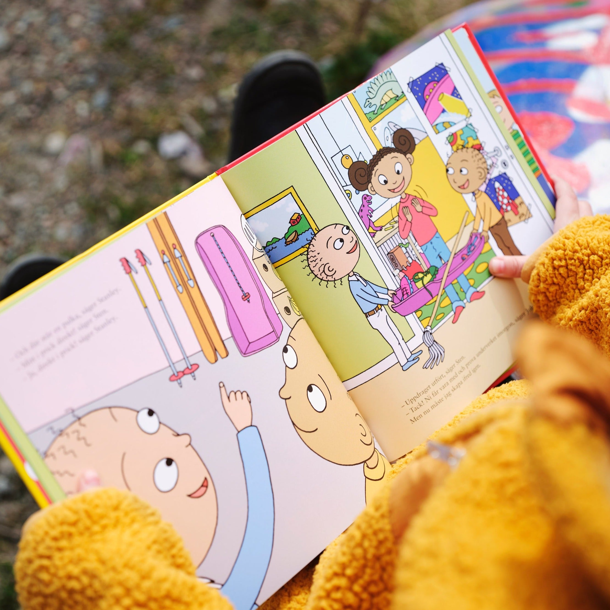

Full Fart, UppfinnarJohanna!
Ann-Christine Magnusson & Lovisa Lesse
Simsala kanin – en slippa-gå-maskin. UppfinnarJohanna har en ny uppfinning på gång! Varje dag är det likadant. När UppfinnarJohanna och hennes syskon ska gå hem tar orken slut. De klarar inte ett steg till. – Ska det vara så här hela livet? undrar de. – Såklart inte! säger Johanna och börjar uppfinna.
Till Butik >